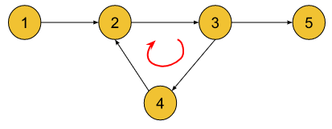
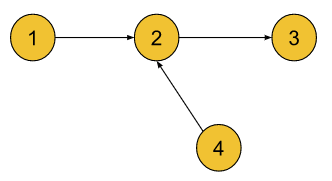

Detect a Cycle in Directed Graph | Topological Sort | Kahn's Algorithm | G-23
Archived from https://takeuforward.org/data-structure/detect-a-cycle-in-directed-graph-topological-sort-kahns-algorithm-g-23/
Problem Statement: Given a Directed Graph with V vertices and E edges, check whether it contains any cycle or not using BFS.
Examples
Input : V = 5, E = 5

Output : TrueExplanation : 2->3->4->2 is a cycle.Input : V = 4, E = 3

Output : FalseExplanation : There is no cycle in the graph. This is a directed acyclic graph.
Disclaimer:
Here is the practice link to help you assess your knowledge better.
It's highly recommend trying to
solve it before looking at the solution.
Approach
Algorithm
In a directed graph, a cycle exists if we can start at some node and keep following directed edges such that we eventually come back to the same node. Detecting such cycles is crucial in problems like task scheduling, dependency resolution, and deadlock detection.
A Topological Sort is a linear ordering of vertices such that for every directed edge from u to v, u comes before v in the ordering. Importantly, a valid topological order exists only if the graph is a Directed Acyclic Graph (DAG). This gives us a powerful idea that if we try to generate a topological sort but cannot include all vertices (some nodes remain stuck due to dependencies), then the graph must contain a cycle.
Kahn’s Algorithm (Topological Sorting Using BFS) makes this detection very straightforward. It repeatedly removes nodes with zero in-degree and if at the end, the number of removed nodes is less than the total nodes, that means some nodes were locked in cycles, and hence a cycle exists.
Compute the in-degree of all nodes in the graph.
Add all nodes with in-degree equal to zero into a queue.
Process nodes from the queue one by one, increasing the count of processed nodes.
For each processed node, reduce the in-degree of its neighbors by one.
If any neighbor’s in-degree becomes zero, push it into the queue.
After processing, compare the count of processed nodes with the total number of nodes to decide if a cycle exists.
Code
#include <bits/stdc++.h>
using namespace std;
class Solution {
public:
// Function to detect cycle in a directed graph using Kahn's Algorithm
bool hasCycle(int V, vector<vector<int>>& adj) {
// Store in-degrees of all nodes
vector<int> indegree(V, 0);
for (int u = 0; u < V; u++) {
for (int v : adj[u]) {
indegree[v]++;
}
}
// Queue for nodes with 0 in-degree
queue<int> q;
for (int i = 0; i < V; i++) {
if (indegree[i] == 0) q.push(i);
}
// Count visited nodes
int count = 0;
while (!q.empty()) {
int node = q.front();
q.pop();
count++;
// Reduce in-degree of neighbors
for (int neighbor : adj[node]) {
indegree[neighbor]--;
if (indegree[neighbor] == 0) {
q.push(neighbor);
}
}
}
// If count != V, cycle exists
return count != V;
}
};
int main() {
int V = 4;
vector<vector<int>> adj = {
{1}, {2}, {3}, {1}
};
Solution obj;
if (obj.hasCycle(V, adj))
cout << "Cycle detected\n";
else
cout << "No cycle\n";
return 0;
}
import java.util.*;
class Solution {
// Function to detect cycle in a directed graph using Kahn's Algorithm
public boolean hasCycle(int V, List<List<Integer>> adj) {
// Store in-degrees of all nodes
int[] indegree = new int[V];
for (int u = 0; u < V; u++) {
for (int v : adj.get(u)) {
indegree[v]++;
}
}
// Queue for nodes with 0 in-degree
Queue<Integer> q = new LinkedList<>();
for (int i = 0; i < V; i++) {
if (indegree[i] == 0) q.add(i);
}
// Count visited nodes
int count = 0;
while (!q.isEmpty()) {
int node = q.poll();
count++;
// Reduce in-degree of neighbors
for (int neighbor : adj.get(node)) {
indegree[neighbor]--;
if (indegree[neighbor] == 0) {
q.add(neighbor);
}
}
}
// If count != V, cycle exists
return count != V;
}
}
public class Main {
public static void main(String[] args) {
int V = 4;
List<List<Integer>> adj = new ArrayList<>();
for (int i = 0; i < V; i++) adj.add(new ArrayList<>());
adj.get(0).add(1);
adj.get(1).add(2);
adj.get(2).add(3);
adj.get(3).add(1);
Solution obj = new Solution();
if (obj.hasCycle(V, adj))
System.out.println("Cycle detected");
else
System.out.println("No cycle");
}
}
from collections import deque
class Solution:
# Function to detect cycle in a directed graph using Kahn's Algorithm
def hasCycle(self, V, adj):
# Store in-degrees of all nodes
indegree = [0] * V
for u in range(V):
for v in adj[u]:
indegree[v] += 1
# Queue for nodes with 0 in-degree
q = deque()
for i in range(V):
if indegree[i] == 0:
q.append(i)
# Count visited nodes
count = 0
while q:
node = q.popleft()
count += 1
# Reduce in-degree of neighbors
for neighbor in adj[node]:
indegree[neighbor] -= 1
if indegree[neighbor] == 0:
q.append(neighbor)
# If count != V, cycle exists
return count != V
if __name__ == "__main__":
V = 4
adj = [[1], [2], [3], [1]]
obj = Solution()
if obj.hasCycle(V, adj):
print("Cycle detected")
else:
print("No cycle")
class Solution {
// Function to detect cycle in a directed graph using Kahn's Algorithm
hasCycle(V, adj) {
// Store in-degrees of all nodes
let indegree = new Array(V).fill(0);
for (let u = 0; u < V; u++) {
for (let v of adj[u]) {
indegree[v]++;
}
}
// Queue for nodes with 0 in-degree
let q = [];
for (let i = 0; i < V; i++) {
if (indegree[i] === 0) q.push(i);
}
// Count visited nodes
let count = 0;
while (q.length > 0) {
let node = q.shift();
count++;
// Reduce in-degree of neighbors
for (let neighbor of adj[node]) {
indegree[neighbor]--;
if (indegree[neighbor] === 0) {
q.push(neighbor);
}
}
}
// If count != V, cycle exists
return count !== V;
}
}
// Driver code
let V = 4;
let adj = [[1], [2], [3], [1]];
let obj = new Solution();
if (obj.hasCycle(V, adj))
console.log("Cycle detected");
else
console.log("No cycle");
Complexity Analysis
Time Complexity: O(V+E), we traverse all the edges and visit all the vertices once. Space Complexity: O(V+E), additonal space is used to store adjacency list, in-degree array and vertices in queue.